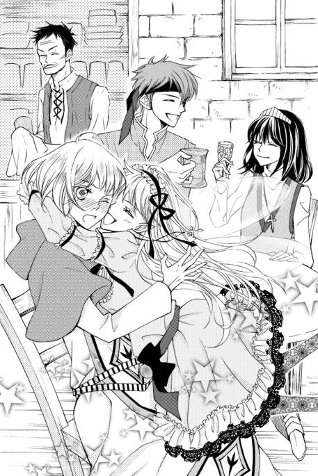
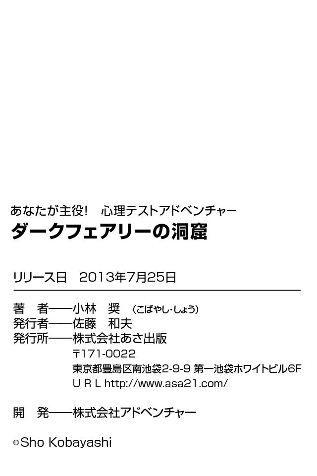

| あなたが主役！ 心理テストアドベンチャー ダークフェアリーの洞窟(あさ出版電子書籍) | |
| 小林奨 | |
| (2013) | |
Ｐｒｏｌｏｇｕｅ 旅のはじまり
あなたはこれから旅に出ます。
城壁から一歩外に出れば、その先に広がるのは危険な世界。
不安定な気候に荒々しい自然。
わずかな隙 を狙って襲ってくる、盗賊や猛獣。
そして何より恐ろしい「妖魔」が、あなたの前に立ちはだかることでしょう。
あなたは、今まで学んだ剣術と魔法を頼りに、道を切り開かなければいけません。
さあ、そんな世界を生き抜くために、旅立ちの準備は必須です。
魔法を唱えられるよう、柄に宝珠がついた愛用の剣。
どんな強風にも負けずに暗闇を照らせるランプ。
素材から吟味して自分の手で作った、丈夫なロープ。
火打石と火打金、火種を作るための毛皮の切れ端。
行商人から買った、ボロボロの地図。
今日のために一生懸命貯めた銀貨。
それらをすべて袋に詰め込み、あなたは自慢のマントを羽織りました。
「いよいよ冒険の世界へ出発！」と思い、目に飛び込んできたものが......！

「出発しよう！」......と、思った矢先に目に飛び込んできたものを、少し迷ったあと、あなたは荷物袋に入れました。
あなたが最後に入れたものは、次のうちどれでしょうか？
１ 暇なときにいつも吹いている、オカリナ
２ 少し前に別れた、元恋人の肖像画
３ 故郷でしか手に入らない、お気に入りの本
４ 地元名産の、珍しい宝石を使ったペンダント
Ａｎｓｗｅｒ
旅をする前に最後に入れたもの。これは「あなたが何よりも大事にしたいもの」を暗示します。
すなわち、あなたが大事にしている価値観が、「仕事・勉強」「恋愛・家庭」のどちらかを問うテスト になります。
１ どちらか一方に集中してしまいがちなタイプ
オカリナを入れることにしたあなたは、一つの物事に没頭するタイプのようです。それ自体は素晴らしいのですが、「どちらか一方を選んでしまおう！」と考えてしまいがち。
「プロのモデルになるなら、恋愛は封印しなきゃ！」と意気込むのも素敵です。
けれど、逆に「恋人とのデートで集めた情報をモデルの仕事に活かす」など、双方にいい影響を与えられるような生き方をすることも、悪くないのではないかと思います。
２ 絆が何より大事！ と考えるタイプ
元恋人の肖像画を入れたあなたは、「恋愛・家庭」を一番大事にする人。
友達や信頼できる仲間と一緒にいることが、何よりの幸せになるようです。
反面、友達や恋人との約束を守るために無理をして体調を崩したり、ほかの約束を断って周りに迷惑をかけてしまうことがあるかもしれません。
「今日は忙しいから、来週誘ってよ」と、無理のないスケジュール調整をお願いすると好転していくと思います。
３ 趣味と仕事に生きていたい！ というタイプ
お気に入りの本を最後に詰め込んだあなたは、「勉強・仕事」を大事にする人。
その分、好きな人にデートに誘われても、「勉強や仕事が忙しいから、行けません」と答えたり、逆に相手が気乗りしなさそうな場所でも、自分の行きたいところなら、無理やり連れていくこともあるようです。
たまには、大切な人に「どこに行きたいの？」と聞いてみるといいと思います。
４ どっちも両立できる万能なタイプ
旅先でお金に換えることも、話のネタにすることもできるペンダントを選んだあなたは、何よりも大切なものを常に考え、どちらも両立できる人のはず。
自分なりのけじめをつけて、進んでいくことができるでしょう。
それでも、「すべてを捨てて、一つのことに命をかける人」に、ときにはなりきってみるのも、人生に彩りが出るのではないかと思います。
ときは夕暮れ。
暗くなりはじめる空の下、あなたはようやく、看板に「コンフォートゾーン」と書いてある一軒の宿にたどり着いた。
そのみすぼらしい外観からして、普通の民宿のようなサービスは到底期待できないことはわかる。
しかし周辺に宿もないため、あなたは大きなドアを開け、店の中に入った。
ドアを開けた瞬間、意外にも温かいシチューの匂いが鼻をくすぐった。
「ああ、いらっしゃい」
宿の一階は、受付を兼ねた酒場にもなっているようだ。傭兵と思しき人達や、いかにも〝ごろつき〟といったいでたちの男達が、葡萄酒やエール（ビールの一種）をあおっている。
「宿泊か？ それとも食事か？ 今日のおすすめメニューは、川魚のムニエルとクリームシチューだ」
そう言いながら、カウンター越しに宿の亭主が声をかけてきた。
年齢は四十代前後だろうか。やや粗野な印象は受けるが、どこか包容力を感じさせる。彼も、昔は荒事で身を立てていたタイプの人間だったのだろう。
「それにしても、珍しいな。こんな宿に、あんたみたいな若い女の旅人が来るとはな」
あなたがカウンターに座りメニューを見ていると、隣からごろつき風の男達が興味深そうに声をかけてきた。見たところ、この店の常連客らしい。
「姉ちゃん、この辺じゃ見ねえ顔だな。ここはあんたみたいな可愛い子が来るところじゃないぜ」
「そう。ここは俺達みてえな根無し草御用達の店だからな。なあ、親父！」
「......フン。やかましいわい」
酒臭い息を吐く客達を尻目にあなたは店内を見回していると、宿の壁面にたくさんの羊皮紙が貼ってあるのに気が付いた。
・毎日畑を荒らす野犬を退治してください。銀貨５００枚
・遺跡の奥にあるといわれる魔剣を取ってきてください。銀貨１０００枚
・西の町に住み着く吸血鬼の退治を手伝ってください。銀貨１２００枚
・遥か北の山にあるという幻の薬草を見つけてください。銀貨２０００枚
あなたがまじまじと、壁に貼られた依頼書を見ているのに気が付いたのか、隣に座っていたごろつき風の男がもう一度声をかけてきた。
「お、そいつに気が付いたな、姉ちゃん。見ての通り、この宿はいろんな荒事の依頼を受けているんだよ」
宿の亭主は半ばため息をつくように、横から口を挟んだ。
「ま、宿と飲食業だけでは採算がとれなくてな。教会の連中からごろつきまで、いろんな奴らから、こういった依頼を受けている。それをこいつらのような命知らずどもに仲介して手数料をいただくってのが、うちの一番の収入源だな」
「命知らずって、失礼だな、親父。まあ、否定はしねえけどな」
傭兵風の男は自虐的に笑うと、残っていたエールを一気に飲み干した。
「この張り紙を見ればわかる通り、依頼内容は玉 石 混 交 だ。初心者でもできるようなものから、相当な熟練者でないと、こなせないものもある」
「初心者が報酬につられて無茶な依頼を受けて、帰ってこなかったなんて話もザラだけどな。そういや、あんたはなんで旅なんかしてるんだ？」
その発言に、あなたはなんと答えた？
１「剣と魔法の腕を磨くなら、旅をするのが一番だと思ったからです」
２「自分が本当にやりたいことを知りたいと思ったからです」
３「いろいろな世界を見て回りたいと思ったからです」
４「昔、大切な人を殺した敵 を討つためです」
Ａｎｓｗｅｒ
人間、今まで住んでいた故郷を離れて、寄る辺のない旅に出るのには、相当の覚悟と理由がつきものです。
ここであなたが選んだ「旅をはじめた理由」はつまり、「あなたが無意識にやりたいと思っているけど、できないこと」 を暗示しています。
１ 毎日決められたことをできるようになりたい
剣と魔法の腕を磨くために旅に出る......。
毎日地道な努力を重ねて、大きな結果を得ることに憧れているようです。
しかし、「五キロ減らしたい！」と思って、スケジュールを立てているうちはいいのですが、次第に飽きっぽくなってしまうところがあるようです。
一日五分ずつでも続けられる課題を見つけ、それを達成するごとに、自分自身をほめるようにすれば、飽きずに続けられるようになると思います。
２ 毎日の生活に満足できるようになりたい
自分のやりたいことを知りたいから旅に出る......。
いわゆる「〝自分探しの旅〟を主人公にさせたい」と思ったあなたは、もしかすると現在の生活に、どこかしら不満を抱えているのではないでしょうか？
あるいは、特に不満はないけれど、何か物足りないような気分を持っている可能性があります。
無理に生活習慣を変えるよりも、「いつもと違う場所でランチを取る」など、小さな変化を重ねていくと、生活に張りが出ると思います。
３ どんなことにでも答えられる「賢者」になりたい
いろいろな世界を見て回りたいから旅に出る......。
見聞を広めることを選んだあなたは、非常に知識欲が旺盛なようです。
おそらく、いろいろなことを知って、さまざまな人に頼られる存在になりたいという願望があるのでしょう。
興味があることを調べていくと、知識の幅が広がっていくと思います。
４ 心から信頼できる友人や恋人が欲しい
ゲームの世界では「復讐」が旅の目的になるのはよくある話ですが、これを選んだあなたは、復讐に駆り立てられるほど深い関係の友人や恋人に憧れているところがあるようです。
少しずつでいいので、悩みを相談するなど、相手を「困ったときに助けてくれる友人」として接していくと、そういう関係が築いていけるかもしれません。
あなたが旅をしている理由に対して、宿の亭主は興味深そうにうなずいた。
「なるほどな。だから、あんたは旅をしてるってわけか......」
そう言いながら、宿の亭主はあなたのほうを見た。
「そういえば、さっきから気になっていたんだが、その宝珠のついた剣、けっこう使いこまれているな。もしかして、剣と魔法には自信があるクチか？」
あなたがうなずくと、宿の亭主はニコリと笑った。
「そうか。なら、しばらくうちの宿で働かないか？ この依頼の数を見てもらえばわかる通り、今、こういった荒事を引き受けてくれる奴が見つからず、人手不足なんだ」
「なんなら、うちの部屋の一室を間借りさせてやる。もちろん宿代は請求するが、安くしておいてやるよ。どうだ？」
悩んだ末、あなたはその提案を受け入れた。
この宿に到着した時点で、すでに路銀が底をつきかけていたからだ。
宿の亭主はパッと顔を輝かせた。
「よし、決まりだな！ なら、宿帳にあんたのことを記録しておきたいから、この紙に書ける範囲でいろいろ書いてくれ」
そう言いながら、宿の亭主は一枚の羊皮紙を取り出した。
いわゆる履歴書のようなものだろう、名前や出身地、今までの経験、家族構成について書くような欄がある。
あなたは自分の名前と今までの簡単な経歴を書き込み、宿帳を亭主に返した。
「ふむ、あんたの職業は〝魔法剣士〟か。剣や魔法は地元の学園で勉強していたんだな。けど、実戦経験はなし......と」
ぶつぶつと呟きながら、宿の亭主は宿帳をぱらぱらとめくり、手を叩いた。
「よし、これならラックス達のパーティーに入れてもらうとよさそうだな」
「ラックス？」と、あなたは宿の亭主に聞き返した。
「そいつらも、うちの宿を間借りして働いている連中だ。そんなに強い連中じゃないが、悪党じゃない。あいつらなら、あんたにちょっかい出すこともないだろうからな。そろそろ帰ってくるだろうから、少し待ってろ」
そう言って一杯の紅茶と、小皿に乗せたナッツを出してくれた。
あなたは財布を取り出したが、宿の亭主は「サービスだ」と言って微笑んでくれた。
――どうやらあなたは、宿の亭主に気に入られたらしい。
それからしばらく待ったが、「ラックス」と呼ばれる男はなかなか帰ってこない。宿の亭主は間を持たせようと、あなたに質問をしてきた。
「それにしても、あんたの着ているそのマント、ずいぶんと高そうだな。正直、駆け出しの冒険者や旅人が持つには不釣り合いなくらいだぞ？」
あなたのマントは、数年間貯めていた貯金をはたいて買った高級なものだ。
質のいい生地を使用しているため、真冬の寒さからも真夏の直射日光からも身を守ることができる優れものである。
さらに表面に熱に強い材質をコーティングしているため、万が一火事に巻き込まれたとしても、身を焼かれる心配も少ない。
そして肩口に鎖が縫い込んでいるため、袈裟懸けに切られたとしても十分に耐えられるようになっている。
さて、あなたは、どんな色のマントを着ている？
１ 白のマント
２ ワインレッドのマント
３ 黒のマント
４ ダークブラウンのマント
Ａｎｓｗｅｒ
マントは、常に他人に見られるもの。
このテストから「あなたが人と関わるときに、周囲にどう思われているか」 がわかります。
１ 正直で実直な真面目な人
白を選んだあなたは、とても正直で真面目な人。
年上からの信頼が厚い反面、周りからは「堅い人」、同年代からは「窮屈」と思われているかもしれません。
正義感が強いので、不良っぽい人より、優しくて温かい人を好むことでしょう。
２ 困ったときには頼りになる、年上キャラ
ワインレッドを選んだあなたは、決断力に優れ男性的。
「頼りになる姉御肌」として、同性に人気があるタイプです。
ただ、並はずれた決断力が、周りを振り回す一面も。
特に人の恋愛沙汰に首を突っ込むと、とんでもない結果になりかねないので、気を付けたほうがいいでしょう。
３ 芸術に関しては天才的なセンスがありそうな人
黒のマントを選んだあなたは、色彩や言語感覚に優れています。
周りからは、センスのよい人と思われて、芸術的な分野では特に頼りにされるでしょう。
ただ、自分の世界観を理解してもらおうとしすぎて、独りよがりになることもあると思います。
ときどき周りに意見を求めたりすると、交流が深まるでしょう。
４ 理知的で飾らないインテリさん
ダークブラウンのマントを選んだあなたは、落ち着いていて理知的です。
気取ったり威張ったりすることのないあなたは、「飾らない人」と思われています。
ただ、猫を被るのがイヤだといって、好きな異性にも素の自分を見せすぎてしまうところがあるかもしれませんね。
それからしばらくたったのち。
ドアが「バタン！」と開き、二人の男が宿に飛び込んできた。
「今帰ったぜ、おやっさん！」
「ただいま。遅くなってごめんなさい」
一人は、大きな剣と動きやすそうな革 鎧 、そして赤茶色のバンダナを額に着けた青年。あなたより年上で、少なくとも成人はしているようだ。
もう一人はあなたより年下の、青色の神官服を着た小柄な少年。大きな瞳が小動物のような愛くるしさを見せている。彼は見たところ未成年だろう。
「ああ、遅かったじゃないか、ラックス。頼んでたものは買ってきたか？」
「ああ、もちろん。これで、今日までの宿代のツケ、半月分はチャラにしてくれるよな？」
そう言って、ラックスと呼ばれた剣士の青年は、酒の入ったケースを「ドン！」とカウンターに置いた。
おそらく、宿の亭主に頼まれ、近くの街まで酒の買い付けに行っていたのだろう。
「バカ言え。せいぜい三日分ってとこだな」
「ちぇ。ケチだな」
「親父さん。モリーは、もう帰ってきてますか？」
神官服を着た少年のほうが、亭主にたずねた。ごろつきや傭兵が多いこの宿では、彼のような上品な口調は珍しい。
「いや、まだだ。まあ、そう遠くに行かせたわけじゃないから、そろそろ帰ってくるだろうがな」
「そうか。ん？」
しばらくして、ラックスはあなたに気が付いて、目を止めた。
「この辺じゃ珍しい顔だな、あんた。観光にでも来たのか？」
「......」
「もしかして、おやっさんの隠し子か？」
その瞬間、「ゴチ！」とラックスの頭に宿の亭主の拳骨が落とされた。
「いてえ！ 何すんだよ！ おやっさん！」
「何、寝言を言ってる！ 今日からお前達同様、うちの宿で働くことになった奴だ。お前達もあいさつしろ」
「ああ......」
頭をさすりながら、ラックスは自己紹介をはじめた。
「俺はラックスっていうんだ。一応、うちのパーティーでリーダーをやってる。
まあ、見ての通り剣士だ。入ってた傭兵団が潰れちまってから、この宿で世話になってるけどな」
と言いながら、ラックスは人懐っこそうな笑顔を見せた。
次は、少年のほうが口を開いた。
「僕はクルトといいます。えっと、神殿で働いていたのですが、いろいろあって、ラックスと冒険稼業をしています。得意分野は治療魔法です」
そう言って、クルトはぺこりと頭を下げた。
「あともう一人、モリーって奴がパーティーにいるが、今は近くの街に手紙を出してもらいに行っている。帰ってきたら紹介するよ。ちょっと変わった奴だけどな。ところであんたはなんていうんだ？」
あなたはラックス達に、簡単な自己紹介を行った。
「へえ、魔法剣士か。すげえな。実戦はどれくらい積んでんだ？」
興味津々といった具合でたずねるラックスに、横から宿の亭主がグラスを拭きながら質問に答えた。
「いや、あいにくだが、まだ実戦経験はないらしい。お前達のパーティー、遠距離攻撃や攻撃魔法が使える奴がいないだろ？ だから、こいつを仲間に入れてみたらどうだ？」
それを聞いたラックス達は、笑ってうなずいた。
「俺は別にかまわないぜ。戦力が上がるし、人数が増えたほうが楽しいからな」
「僕も賛成です。お互いまだまだ未熟なところがあると思いますが、よろしくお願いします」
そう言って二人は手を差し出した。
あなたがその手を握ろうとした瞬間―。
突然、窓ガラスがガシャン！ と割れる音がして、何かが飛び込んできた。
その瞬間、あなたはどんな行動を取った？
１ 剣を構えて応戦の準備を整えた
２ 大声で悲鳴を上げた
３ 近くにあった酒瓶を投げつけた
４ 無視して二人と握手した
Ａｎｓｗｅｒ
突然、窓ガラスが割れるというのは、自分の心に踏み込まれることを暗示します。
このような事態に遭遇したときにあなたが取った行動で、他人と口論が起きたときにどんな対処をしてしまうか がわかります。
１ 露骨に悪口を言うタイプ
早速戦おうとしたあなたは、相手に対して露骨に攻撃的な行動を取るタイプ。
大勢人がいる前で、その人の悪口を言ったりすることも多そう。
しかし逆に、そのおかげでスッキリしたり、「裏表のない人」と思われることでしょう。
２ 感情的になって大暴れ！ なタイプ
声を出すあなたは、ひたすら感情的になるタイプ。
逆上するだけならまだしも、周りの人（またはまったく関係のない友達）にグチをぶちまけて大騒ぎ......ということはしないように気を付けましょう。
３ ちょっぴり腹黒な闇 討ちタイプ
まず自分の安全を確保できるところから攻撃を行おうとしたあなたは、表面上は仲直りしているけれど、根に持つタイプです。
トラブルのあとに、友達に陰口を言ったりする傾向が多いはず。
根に持たずにカラッとした性格で生きていくと、きっとうまくいくでしょう。
４ とにかくひたすら相手にしないタイプ
完全に相手にしないあなたは、嫌いな相手には、ひたすら無視を決め込むタイプ。
案外、これが相手にとって一番キツいことなので、きっと口げんかは地味に強いはず。その力を活かせば、悪徳商法やナンパに引っかかることは、まずないでしょう。
部屋に飛び込んできたのは、一匹の妖精だった。
身長は、１３０センチ程。
絹糸のように細く美しい髪を持ち、背中の四枚の透明な羽根をパタパタとせわしなく羽ばたかせている。フリルたっぷりのワンピースを着た彼女は、まるで人形のように愛らしい。
「ただいま、クルト！ 遅くなってごめんね！」
「うわ！」
その妖精は、いきなりクルトに抱きついてきた。
「モリー！ なんてことをするんだ！」
割れた窓ガラスを掃除しながら、宿の亭主はモリーを怒鳴りつけた。
が、モリーは悪びれもしない様子で答えた。
「ん？ 大丈夫。ちゃんと親父さんに頼まれた手紙は渡してきたから」
「違う！ 帰ってくるときに窓ガラスを割るな！ 何度繰り返せば気がすむんだ！ ワシの店を潰す気か！」
「いいじゃん、別に。堅いこと言わないでったら。一秒でも早くクルトに会いたかったんだもん！ その窓、またふさいどいてね」
「......なんだと？」
「そんなことより、クルト！ 一人は寂しかったよ～」
「ちょっとモリー、止めてくださいよ！」
ぎゅうぎゅうと、クルトに頬を押し付けるモリー。
しばらくして、見かねたラックスがクルトからモリーを強引に引き離した。
「ほら、クルトも嫌がってるだろ？ その辺にしておけ」
「わかったわよ......」
宿の亭主は呆れながらも、モリーを指差した。
「で、こいつがさっきから話してた〝モリー〟だ。補助魔法が使えるから冒険では頼れるんだが。見ての通り、やかましくてわがままな奴だ」
「やかましくて悪かったわね！」
「ハァ......。ガラス片がずいぶん飛び散りましたが、ケガはありませんか？」
クルトは心配そうにあなたのほうを見やったため、あなたはケガをしていない旨を伝えた。
「なら、よかったです。あなたもこれから僕達と一緒に冒険をすることになるんですから、ケガをしたときにはいつでも言ってくださいね」
そう言って微笑を浮かべるクルトを、モリーは鬼のような形相でにらみつけた。
（何よ、クルト！ あんな笑顔、あたしには滅多に見せないのに......！）
そして、尋問するような口調であなたに詰め寄った。
「......そういや、あんた誰？ マント以外は安っぽいカッコしてるとこ見ると、新入りの冒険者？」
あなたが口を開こうとしたが、代わりにラックスが質問に答えた。
「ああ。今日から俺達のパーティーに加えようと思ってる」
「え～？ なんでよ？」
「なんだよ、別にいいだろ？ 人数増えたほうが仕事も楽になるしな」
「そうですよ。それに女性の仲間が増えたほうが、モリーもやりやすいと思いませんか？」
しかしモリーは、あなたとクルトを交互に見据えたあと、口を尖 らせた。
「あたしはこの子入れるの、イヤ」
「......は？」
「だって、この子駆け出しでしょ？ 足手まといになるだけだし、あたしとクルト達だけでいいじゃん？ 今までだってそうしてたんだし！」
そう言いながら、モリーは店内を所狭しと飛び回った。落ち着きのない性格なのだろう。
その様を邪魔くさそうににらみつける客もいたが、モリーは気にしていない。
「......まったく」
宿の亭主は、突然真剣な表情になり、モリーに耳打ちした。
「モリー。ちょっと聞け」
「何？」
「お前がこの宿に来てから、今までに割ったガラスはすでに十八枚」
「え？」
「さらに、店の中で暴れ回って壊した椅子が九脚。ランプが四個。ランプの火が燃え移ってボヤが起きたことも一回あったな」
「え、え......？」
「挙句の果てに、ボヤ騒動のときに、値打ちもののカーペットが一枚焼失した」
「あ、あれは不可抗力で......」
「そして救い難いことに、お前はラックス同様、ツケを半月分貯めている。お前達はよく食うから、それはそれは素晴らしい金額が帳簿に記載されているぞ」
「い、いや、その......」
「さて、もう一度話を聞こう。この娘をパーティーに入れる気はないのか？」
答えが一つしかないことは、亭主の真剣な目を見ればわかる。
「も、もちろん大歓迎よ！ あなた、これからよろしくね！」
モリーは突然態度を改め、あなたの手を取って握手をしてきた。
「ったく。これから、大変になりそうだな......」
そう言いながらラックスは、頭をガリガリと掻 いた。
そのときあなたは、モリーの体からとてもいい香りがすることに気が付いた。おそらく、香水か何かをつけているのだろう。
さて、それはどんな香りだった？
１ オレンジの香り
２ クッキーの香り
３ バラの香り
４ ローズマリーの香り
Ａｎｓｗｅｒ
あなたが選んだ香水の香りは「恋」を暗示しています。そのため、このテストからあなたの「理想の恋愛像」 を知ることができます。
１ 甘くて優しい純愛が好き！
甘くて酸っぱいオレンジの香りを選んだあなたは、「純愛」に憧れを持っています。デートのようなイベントそのものより、一緒にいて安心できる人の側にいるような恋が好みです。
自然体で一緒にいられるだけで楽しい！ そう思える関係が作れるとよいですね。
２ 情熱を燃やせる、熱い愛に憧れる！
クッキーの香りを選んだあなたは、炎のような激しい恋愛を好みます。
旅先での恋、ひと夏の恋、療養所での恋......。
ただ、情熱から冷めたあと、他人に対して冷淡になるところもあるでしょう。別れ際は気を付けたほうがいいかもしれません。
３ 映画のようなロマンあふれる恋愛を夢見ている！
バラの香りを選んだあなたは、ロマンチスト。いわゆる非日常的な世界でのデートを好む傾向があるようです。
「野外コンサートでジャズを聴く」「スカイレストランのラウンジでディナー」
「ハーフの彼氏とダンスパーティー」のようなカタカナ系のシチュエーションを好む傾向にあるのではないかと思います。
４ 趣味を共有できる人と一緒にいたい！
ハーブの香りを選んだあなたは、互いに興味を持てるものに没頭できる関係を好みます。
好きな人と好きな映画を見たり、一緒にバンドを組んだり......。そういう付き合い方が理想だと思っています。
ただ、自分の趣味の世界に、蟻 地獄のように引きずり込もうとして失敗......ということには、ならないようにしてくださいね。
あなたがモリーと握手をしたあと、ラックスが小声で、ばつが悪そうに耳打ちした。
「悪いな。ほら、こいつ妖精だからさ。普通よりキツい言い方をしちまうんだけど、気を悪くしないでくれよ。俺達は、あんたが来てくれて楽しみだしな」
妖精族に共通した特徴として、自分の欲求を我慢せず、素直に表現してしまいがちな点がある。
そのことを知っているあなたは、黙ってうなずいた。
「よし、決まり！ こいつは新入りの加入記念だ。親睦を深めるのも含めて、腹いっぱい食ってくれ。ワシのおごりだ！」
ドン！ と宿の亭主はお皿いっぱいに盛られた揚げじゃがをテーブルの上に置いた。
塩胡椒とラードがたっぷり効いているこの料理は、この宿の名物とのことだ。
「あは、さっすが親父さん！ 待ってました！」
先ほどまでぶつくさ言っていたモリーは、ころっと態度を変えた。
感情の起伏が激しいのも、同じく妖精族の特徴である。
「珍しく太っ腹じゃねえか！ 可愛い新入りが来て、おやっさんが浮かれるのはわかるけどな！」
「ゴチ！」と、もう一度ラックスの頭に拳骨が落とされた。
「アホか！ お前さん達が冒険者として来たときも、同じメニューを出しただろうが！」
「いててて......！ ほんのジョークにいちいち目くじら立ててると、老けるぜ？」
「やかましいわ！ あと、加入記念にこいつもプレゼントだ」
宿の亭主はそう言いながら、壁に無造作に貼られていた依頼の張り紙を一枚はがしてラックスの机の上に置いた。
「ん？ 新しい依頼か？」
「ああ。隣町で最近、宝石を妖魔に盗まれる事件が頻発しているらしい」
「妖魔が？」
「ああ。だから宝石を取り返してほしいとのことだ。隠れている洞窟もわかっているらしい。お前さん達なら一日もあればできるだろう？」
「え～？ でもこれ、報酬が安いじゃん？ どうせならもっと、一年は遊んで暮らせるような依頼とかないの？」
「十年早いわ、大バカ者！ そんなことばかり言って、ここ最近全然仕事してないだろうが！ 少しは働け！」
「ちぇ......。わかったわよ」
「へへっ。久しぶりの妖魔退治か。慎重にいかねえとな」
ぶつくさ言うモリーとは対照的に、ラックスは楽しそうに笑った。
「うーん。妖魔といっても、あまり痛めつけたくはないのですけど......」
「まあ、それは俺も同感だな。親父！ 景気づけにエールを一杯くれ！」
「あ、あたしもリンゴ酒ちょうだい！」
「しょうがないな。明日早いんだから飲みすぎんなよ！」
「わかってるって！ ほら、かんぱーい！」
あなたはラックス達と楽しく談笑をした。
しばらくして食堂の閉店時間となり、あなた達は二階に上がっていった。
「じゃあ、お前の部屋はあっちだ。俺とクルトは隣の部屋にいるからな」
「あたしの部屋はこっち。間違えて入ってきたら殺すわよ」
宿の亭主は、あなたとモリーの寝室を別にした。先ほどのやり取りから、モリーがあなたに好印象を持ってないと感じた故の配慮だろう。
「もちろんクルトは、いつでもあたしの部屋に来ていいわよ」
「い、いえ......。僕は遠慮しておきますよ......」
「じゃあ、あたしがクルトの部屋に！」
「忍び込んできたら、俺が全力で叩き出してやるからな」
「......頼りにしていますよ、ラックス......」
「フーンだ！ ラックスの意地悪！」
ラックスとクルトは、長いこと一緒に冒険をしているため、兄弟のように仲がいい。そのことは、二人が同室で寝ていることからも十分に理解できる。
「それじゃあ、お休み。明日から頑張ろうな」
あなたはラックスに微笑むと、自室に戻った。
部屋の中は、思いのほか広かった。
あなたは服を着替え、軽く剣の手入れをすませるとベッドに入った。
そしてあなたは、どのように眠った？
１ 大の字になって大いびきをかいて眠った
２ 仰向けのまま、すやすやと眠った
３ 横向きになって周囲に気を払いながら眠った
４ うつ伏せに倒れ伏すように眠った
Ａｎｓｗｅｒ
寝相というのは、人間の性格がそのまま表れます。
え、寝相が悪くて、毎朝違う寝相をしている？
その場合は、それぞれの「中間」が、自分の性格だと考えてください。
１ 常に新しいことにチャレンジするのが好きなタイプ
豪快なあなたは、チャレンジ精神が旺盛。思い切って新しいものにチャレンジしたり、一つのものに全力で取りかかることによって、明るい未来が開かれるかもしれません。
反面、ちょっと飽きっぽいところもあるので、継続的な努力をするための工夫をするといいでしょう。
２ 周りを和ませる潤滑油になるタイプ
極めて一般的な寝相で眠るあなたは、協調性に優れています。
仕事でもスポーツでも仲間と協力して、何かをやるような種目が向いています。
リーダーシップを取るよりも、周りの潤滑油や調整役になると、力を発揮できるでしょう。
３ とにかく慎重で冷静なタイプ
宿でも周りの警戒を忘れないあなたは、慎重なところが長所ですが、前に一歩出て発言する勇気を持てないという弱点があります。
しかし心理学的に考えると、集団というのは「極端な意見」を採用しがち。中世の魔女狩りなどが、そのわかりやすい例でしょう。
そういうときに、冷静になってものを見据えることができるあなたの力が、きっと大きな頼りになるでしょう。
４ ランダム性の強い凸凹タイプ
力を使い果たし、うつ伏せで倒れ伏すように眠るあなたは、自信のあるなしによって力が大きくも小さくもなる、振れ幅の大きい性格のようです。得意分野は平気だけど苦手分野はとことんできないことも多いはず。
苦手な分野に関しては簡単なことから手をつけ、苦手意識を消していけば、きっと大きく伸びていくことでしょう。
次の日。
あなたは夜明けとともに起き、寝ぼけ眼で支度をすませると、部屋をあとにした。
「おはようございます。昨日の疲れは取れましたか？」
階下では、クルトが朝食の準備をしながら、にっこりと微笑みかけてきた。
神官服の上からひよ子柄のエプロンを身につけて微笑む彼は、まるで美少女のような可愛らしい容姿をしている。
彼がいつも神官服を着ているのは、「性別を間違われないようにするためでもある」とも昨日話していた。
「どうぞ、召し上がってください。生みたての卵で作りました。お口に合うといいのですが......」
あなたは用意された朝食を口に運んだ。
口の中でふんわりと溶けるオムレツ。
シャリシャリのグリーンサラダ。
朝露を吸ったかと思うほどに、しっとりとした小麦のパン。
そのどれもが美味であることを、クルトに伝えた。
「喜んでもらえたら何よりです。しっかり朝食を食べることは、冒険から無事に戻ってこられることを、より確かにしますからね。今日も頑張りましょう」
あなたは腹六分目程度まで食べたところで食事を終えた。
そして、クルトに、ラックスとモリーがどこにいるのか、たずねてみた。
「ああ......。ラックスは、モリーを起こしに行っています」
その瞬間、二階から凄まじい大声が聞こえてきた。
「起きろ、このバカ妖精！」
「う～ん......。まだ......あと三時間」
「いつまでも寝ぼけたこと言ってんじゃねえ！ さっさと目を覚ませ！ 夢から醒めろ！」
「夢を見るな？ そんなこと言う、つまらない大人には......なりたくないよ。そう、あたしは冒険者......。自由の身よ......」
「そういうつもりで言ったんじゃねえ～～～！」
二階が静かになり、ラックスとモリーが降りてきたのは、それから十五分後であった。
それから数時間後。
あなたたちは、宿の亭主からもらった地図に書いてあった山を登りはじめていた。
「ったく。たまには自分で起きろよな！」
「だって、まだ朝の五時だったじゃん！ あたしは、一日に十時間寝ないとダメなの！」
「なら、もっと早く寝ればいいだろ！」
ラックス達のような冒険者は基本的に、夜明けと共に起きるのが常識だ。
しかし、妖精族のモリーは「生理的欲求に反する行動」を取ることが苦手である。そのため、毎朝ラックスが叩き起こしている。
クルトは二人を尻目に、あなたに話しかけてきた。
「ラックスも寝起きは機嫌が悪いから、いつも大騒ぎになるんですよ。昨日はよく眠れました？」
実際のところ、シーツの手入れが悪くかび臭かったため、ベッドでの寝心地はあまりよくなかった。それを伝えると、クルトは同情交じりに苦笑した。
「そうでしたか。なら、今度町にシーツを買いに行きませんか？」
「お、それなら俺も付き合うぜ。ついでに、こないだできた新しい酒場にも行かねえか？」
「何言ってるんですか！ 最近飲みすぎですよ。少し控えてください！」
「そうかあ？ ちょっとくらいいいじゃねえか。相変わらず堅えなあ」
「まったく......しょうがないですね。けど、ほどほどにしてくださいよ」
「わかってるって。こいつの歓迎パーティーも兼ねて、パーッとやろうぜ！」
「単に飲む口実が欲しいだけでしょう？ 魂胆が見え見えですよ」
「......」
楽しく談笑するあなた達の間に、モリーはグイッと割り込んできた。
「ちょっと、あんた」
「？」
「はじめてだからって、クルト達に甘えるんじゃないわよ？ 今回の依頼で下手打ったら、パーティーから外れてもらうわよ。わかった？」
けんか腰そのものの態度に、クルトも困惑したように言った。
「ちょっと、モリー。そんな言い方は」
「危なくなったら、助けてもらえる......なんて勘違いしないでよね。そんな甘い考えだと、すぐに妖魔の餌にでもなるのがオチよ？ それからね......」
その攻撃的な口調にクルトも不快な顔を示したのに気が付いたのか、ラックスは急に「バン！」とモリーの肩を叩いた。
「なあ、モリー」
「え？」
「お前、こいつが愛しのクルトちゃんと話していたのが、そんなに気に食わなかったのか？」
「べ、別に、そんなんじゃないもん！」
「お前のやきもちはひでーからな。前なんて、クルトに道をたずねてきた女の顔、いきなりひっぱたいたじゃねえか」
「うっさいわね！ だってあの女の目！ 絶対にクルトを狙ってたわよ！」
「なんだ、そりゃ？ そんなの、どうせお前の妄想だろ？」
「フン！ ラックスには、女の勘の鋭さがわからないのよ！」
「一万歩譲って仮にお前の言う通りだとしても、いきなりひっぱたくのはやりすぎだぜ？ チビで、ぺったんこな分、中身くらいは大人になれよ」
「何よ、ラックスのバカ！」
モリーの怒りの矛先があなたからラックスに変わったため、ラックスは手振りでクルトとあなたに先に行くように合図を送った。
（お前達、今のうちに先に行ってろ）
（すみません、ラックス。洞窟の前で待ってます）
それに従い、あなた達は山道を先に登っていった。
それからしばらくして、クルトが足を止めた。
「どうやら着いたようですね......」
見ると、森の先に見える洞窟の前で妖魔たちが、辺りをうかがっていた。
数分ほどたって、ラックス達も合流した。さんざん口げんかをしたせいか、モリーは少し落ち着いたようだ。
「遅くなってすまねえ。敵さんは、どんな奴だ？」
「......ダークフェアリーね。あたし達妖精族の、できの悪い親戚よ」
モリーも高度を落として声を潜めた。
ダークフェアリーは大きな鼻と尖った耳、そして細い手足を持つ醜悪な妖魔。
妖精よりもさらに理性が乏しく、非常に短気で粗暴な性格をしている。
羽が退化しており空を飛べない反面、腕力は強い。
高等な種族とはいえないが、狡 猾 な性格から生み出された罠 は、ときにベテランの冒険者をも苦しめることがある。
「そうか。ところで洞窟にははっきり見える一匹以外に、あと何匹いるんだ？」
ラックスは目を細めて妖魔たちを見ながら、あなたにたずねた。あなたは何匹いると、伝えた？
Ａｎｓｗｅｒ
醜悪な彼らは、あなたが「自分を嫌っている」と思っている相手を暗示しています。
人数が多ければ多いほど、あなたは「自分が嫌われ者」だと思っていることになります。
え？ 百匹もいるって答えた？
そうだとしても、大丈夫。実際はそんなにあなたを嫌っている人はいないものです。
「なんで、自分が嫌われていると思うのか？」という根拠を一つずつ考え直していくと、案外、自分が嫌われていないことに気が付くと思います。
「とにかく、もう少し近付いてみよう......」
近付いていくうちに、木々の切れ目まで来た。距離にして十五歩。「一、二、......。全部で五匹か......」
あなたたちが近付いている間に妖魔たちは洞窟を出入りしたため、数が変わったようだ。五匹の妖魔は洞窟の前で、用心深く見張りを行っている。
互いの死角をカバーし合っているため、これ以上見つからないまま洞窟に近付くのは不可能だろう。
「これで全部とは思えませんね。おそらく、洞窟の中にも相当な数がいると思います。それとラックス。気付きましたか？」
「ああ。理性の乏しい妖魔が、あれほど統率された行動を取れるのは少し妙だ。よほど頭のいいリーダーがいるか、あるいは......」
「人間、もしくはそれに準ずる種族が彼らを操っているか......ですね。さて、あそこにいる見張り達ですが、どうしましょうか？」
「はい、はい！ それなら、あたしに任せて！」
モリーが手を挙げたが、ラックスは笑いながら首を振った。
「バカ言うなよ。白兵戦（刀剣などの近接戦闘用の武器を用いた戦闘のこと）が苦手なお前一人じゃ厳しいだろ？ モリーは叫び声が洞窟に響かないよう、魔法であいつらの口を封じてくれればいい。あとは俺がやる」
「もう。まあ、それでもいいわ。ラックス、へましないでよね」
「その言葉、そっくりそのままリボンつけて返してやるよ」
あなたも手伝おうかと言ったが、モリーが鋭い目つきでにらみつけた。
「あんたは足手まといよ。それより、あたし達の実力を見て驚かないことね！」
「モリー！ そういうの止めてください！」
「まったく。ま、今回は俺の傭兵剣技を見てもらいたいからな。お前はそこでじっとしててくれ」
ラックスは苦笑しながら剣を抜いた。
モリーは静かに詠唱をはじめた。
「雄弁なるものに告ぐ、空気を震わす波動を打ち消さん......。おしゃべりな男はモテないわよ！ 〝サイレント・オブ・ロアー〟！」
その叫びと共に、モリーの目の前に紫色の魔法陣が展開された。
その直後、妖魔たちは、
「......？」
自らの声帯がマヒしたことに気付き、浮足立った。
その隙に、ラックスは剣を抜き、鞘 を外して右手に持つと、
「はあ！」
一番近くにいた敵の足元に、それを勢いよく投げつけた。
「......！」
鞘は妖魔の向こうずねに命中し、そのまま悲鳴を上げることもできないまま倒れ込んだ。
ラックスはすぐに剣に持ち替えて、敵の中央に飛び込み、
「でいやあ！」
と、剣を地面にかすらせ、足元の砂を大きく巻き上げた。
その瞬間、妖魔たちは目に砂を浴び、体を丸めた。
茂みの向こうからその光景を覗いていたクルトは、少し興奮した様子であなたに話しかけた。
「どうです、見ましたか？ あれはラックスの得意技です。傭兵剣技は、あんな風に相手の意表をつく技が基本なんです。あと、傭兵は敵を生け捕りにしたり剣を折られたときのために、格闘技も剣技に織り交ぜることが多くて......」
ラックスの行う〝傭兵剣技〟について説明するクルトの表情は、まるで大好きな乗り物の説明をする男子小学生のような口調だ。今までの大人びた態度からは想像もできない。
「僕も、あんな風になれたらよかったのになあ」
舞うような剣さばきで妖魔の意識を奪っていくラックスを、クルトは憧 憬 のこもった目で見ていた。
ラックスの奮闘により、五匹の妖魔は完全に気を失った。
「よし、あと一匹！」
そう言いながらラックスは、最後に残った妖魔の方を向いた。
妖魔も、まだ戦意は喪失していないらしく、手に持っている曲刀を構えた。
「さあ、来い！」
それを見たラックスは再び、大剣を振り上げた。
時を同じくして、こちらは洞窟の入り口。ラックスからは死角になっている。
「ギイイイ......」
洞窟の中から、もう一匹の妖魔がひょっこりと姿を現した。
恐らく、散歩か巡回にでも行くところだったのだろう。
「ギ？」
一瞬自分の仲間が、人間の剣士と切り結んでいるのを見て、困惑した表情を見せたが、すぐにその醜い顔を歪 ませると、棍棒を手にラックスの背後にゆっくり近づいて行った。
もし彼らが人間だったなら、洞窟の奥に走り、仲間に侵入者のことを知らせていただろう。衝動的な行動を起こすのは、彼らやモリー達、妖精族の特徴だ。
あなたはすぐに、ラックスの背後に近付く妖魔に気が付いた。が、ラックスは前方の敵に気を取られ、背後から現れた増援に気づいていない。
「よし、これで終わりだ！」
目の前にいた五匹目の妖魔が倒れ込んだことに安堵し、剣を収めようとするラックスに、あなたは「危ない！」と、ラックスに声をかけた。
「え？」
「ギギイ！」
振り向いた瞬間、妖魔の手にしていた棍棒が頭上に振り下ろされた。
「ガツン！」という音が響き、ラックスは表情を歪ませる。
「いってててて......。昨日から、頭を殴られてばかりだぜ......」
ラックスはそう呟 きながらも身をかがめて剣を握り直す。相手の武器が刃物でなかったのは不幸中の幸いだっただろう。
そしてわざと足元をふら付かせ、弱った振りをしながら、剣を下段に構えた。
「ギイイイイ！」
一度頭部への攻撃に成功して気をよくしたのだろう、ラックスの誘いに乗った妖魔は頭上を狙うべく、大きく棍棒を振り上げた。
「そこだ！」
その瞬間、がら空きになった腹部に、ラックスは強烈な前蹴りをお見舞いした。妖魔の体が大きくかしぐ。
「今度こそ、終わりだ！」
そして妖魔が取りこぼした棍棒を拾い上げ、頭上に振り下ろした。
先ほどより大きな「ガツン！」が響き、最後の妖魔は叫び声も発さず、その場に倒れ込んだ。
しばらくして、ラックスの足元には五匹の妖魔が倒れ伏していた。
「ふう......」
命までは奪われていないようだが、しばらくは起き上がることすらできないだろう。
「クルト、悪いけどちょっと手伝ってくれるか？」
「ええ。けど、頭の怪我は大丈夫ですか？」
クルトはそう言いながら、荷物袋に入れていたロープを一本取り出した。
「あれくらい、大したダメージじゃねえよ。とりあえずこいつらは、そこの木にでも縛り付けておけばいいか」
二人は近くにあった木の下に妖魔を連れて行き、妖魔を縛り上げた。ロープの結び目に小枝を絡ませておいたので、目を覚ました後、自力で抜け出ることも可能だろう。
「これで一丁あがり......だな。」
ラックスは軽く息を弾ませながらも、明るい表情であなたのほうに向き直った。
「そういや、さっきは妖魔がいることを教えてくれてありがとうな。不意打ちであの一撃をくらっていたら、やられてたかもしれないからな」
「ぶー。あたしだって、声かけようと思ってたのに......」
頬を膨らませるモリーを見て、ラックスは少し呆れた表情をした。
「......さあ、洞窟の中に入ろうぜ」
あなたは洞窟に足を踏み込んだとき、どう思った？
１「大きな洞窟だね。ちょっと不気味だし、薄暗いな。けど、足元はけっこう歩きやすい。これなら、なんとか行けそうかな」
２「うう......。暗いし、寒いし、妖魔の気配があちこちからする。さっさと終わりにして帰りたいな」
３「この洞窟、入り口は見た目よりずいぶん窮屈だな。ゆっくり、落ち着いて進んでいかなくちゃ」
４「うわ、何これ？ 足元はぬかるんでいるし、頭から変な水滴がたれてくるし！ しかも、これは動物の死体？ 汚くてイヤになりそう」
Ａｎｓｗｅｒ
洞窟というのは、まだわからない未知のもの。
あなたがこれから挑戦しようとしている、新しいことに対して感じている印象 を暗示します。
１ 期待も不安もいっぱいだけど、楽しみで仕方ない！
あなたは、新しいことに対して期待感でいっぱい。
不安もあるけれども、それよりも挑戦しようとするエネルギーに、満ちあふれています。
反面、行動することを好むあなたは、準備や下調べをちゃんとしないまま行動に移すこともありそう。
安易な道に流されないようにしていけば、きっとうまくいくでしょう。
２ 不安でいっぱい。あきらめることも視野に入れている
あなたは、新しいことに対する不安感でいっぱい。
「案ずるより産むが易し」なんて言葉も、気休めにしかならないと思っているかもしれません。
しかしその分「引き下がる勇気」も持っているので、大きな失敗はしないでしょう。引き下がったあと、気を取り直して再チャレンジをするのもいいと思います。
３ 難しいことに挑戦したいけど、自分に務まるか不安
あなたは「自分にうまくできるか」を心配しているようです。
もしかして、よほど難しいものにチャレンジしようとしていませんか？
他人が失敗した例や、自分の過去の体験から考えて、「自分にはできないんじゃないか」と考えているようですね。
「過去に失敗した経験を活かして、今度は成功する」という考え方を持って挑戦すれば、それは実を結ぶと思います。
４ 誰にも妨害されずに行ければいいけど......
どうやら、他人からの妨害を心配しているようですね。
いつか、周りにいる誰かが自分を邪魔しに来るんじゃないか......と、いつも考えているはず。
けれども、足元のぬかるみは洞窟に水が豊富にある証拠。
動物がいるのは、洞窟がそれほど深くない証拠。
不安要素が逆にプラス要素にもなりえるということに気が付けば、きっとその不安はなくなるでしょう。
あなたたちは松明の明かりを頼りに、洞窟の中をゆっくりと進んでいた。
「けっこう中は広いですね......」
「ああ。足元に気を付けろよ。まあ、モリーは心配ないか」
羽虫のように羽根を震わせながらラックスのうしろを飛ぶモリーは、うなずいた。
「ええ。それにしても、さっきの戦い見てても思ったんだけどさ、ラックスの剣技って地味よね」
「あん？」
「だって、ほかの剣士さんはもっとカッコいい技を使うじゃない。剣圧を走らせて遠くの敵を吹き飛ばしたりとか、〝気〟の固まりをぶつけて敵を撃ち倒したりとか、剣に雷や炎をまとって攻撃したりとか。ラックスはできないの？ そういう派手な技」
その言葉に、ラックスは顔をしかめた。おそらく気にしているのだろう。
「うるせーな。傭兵剣技ってのは、気とか精霊とかを操れない人間でも扱えるように考案されたものだから地味なんだよ。なんならお前だって、魔界の王を呼び出したり、ブラックホール作り出したりとかそういう魔法、やってみろよ？ 補助魔法っきゃ使えねーくせによ！」
「ええ、やってやろうじゃない！ そしたら真っ先にあんたをぶっ飛ばすわ！」
「もう、二人とも止めてください！ 仮にも敵の本拠地ですよ？ せっかく敵に気づかれないように入り込めたのに、台無しになっちゃいます！」
「あはは。悪い悪い」
と、緊張感のない会話を続けるうちに、分かれ道に着いた。
ラックスは二つの道を見比べて、呟いた。
「ふむ......。道幅が広いから、右の道が正解かな？」
「え？ あたしは道が固くて歩きやすそうな左だと思うけど？」
意見が割れたのを見て、クルトは口を開いた。
「ふむ......。どちらが正解かわかりませんし、ここは手分けしていきませんか？ いちいち全員で行くと手間ですし、罠があると全滅の可能性もありますから」
「じゃああたし、クルトとコンビ組む！ 文句ないわよね！」
ここぞとばかりに、モリーはクルトの手を取った。
「ったく......。じゃあ、俺はお前と組むことになるな」
そう言って、ラックスはあなたの手をつかんだ。
「じゃあラックス。気を付けてくださいね」
「ああ。クルト、お前もな」
ラックスはクルトから松明を一本受け取り、パン！ とハイタッチをすると、あなたと一緒に洞窟の奥に足を進めた。
「なあ、気を悪くしないでくれよ」
二人きりになったあと、急にラックスはあなたに申しわけなさそうな顔を向けた。
「モリーの奴だけど......。お前にずいぶんひどいこと言ってるからな。クルトに近付く女のこと、みんな自分の敵だと思ってるんだよ、あいつ」
あなたはラックスの話に耳を傾けた。
「妖精族って大体、あんな性格だろ？ 相手の本音を汲み取れないし、衝動的に行動も起こすし、注意力が散漫で落ち着きがない。そして個体数も人間より少ない。だから、人間にいじめられることも多いんだよ。モリーも同じで、昔は相当迫害を受けてたらしい」
そう言いながら、ラックスは松明を少し揺らした。大きな影が、ゆらゆらと動く。
「けどさ、クルトだけは違ったんだ。ボロボロになって、それでも自分の性を変えられないあいつを〝仲間〟として迎えたんだ。それ以降、ずっとああやってクルトにくっついてるわけなんだ」
ラックスが一呼吸置いたタイミングで、あなたは黙ってうなずいた。
「だから、ただでさえ嫉妬深いあいつにとって、お前みたいな可愛い子がクルトに近付くのが、絶対に許せねえんだろうな」
そこで、ラックスはもう一度あなたのほうを見た。
「ん？ よく見るとお前、顔に泥ついてるぞ。洞窟に入るときにどっかに顔ぶつけただろ？」
そう言ってラックスはあなたの顔に指を添え、泥を落としてくれた。
「よし、落ちた。先に行こうか」
そう言ってラックスは微笑んだ。
さて、あなたは顔のどこに泥がついていた？
１ 目元
２ 鼻
３ 口の周り
４ 耳元
Ａｎｓｗｅｒ
ついていた泥は、他人に見せたくないコンプレックスを意味します。
あなたが隠した場所から、あなたが他人に知られたくないこと がわかります。
１ 数字なんて大っ嫌い！
目元を選んだあなたは、とにかく数字を気にするタイプ。自分の成績や体型を気にしすぎかもしれませんね。
『星の王子さま』でも書かれていますが、とかく人間は数字を好むもの。
けど、それが自分を苦しめるようなものになるのが困りものです。たまには数字を気にしないで好きなことをやるのも、いいと思います。
２ こんな過去しか持ってない自分が、イヤになる......
鼻を選んだあなたは、自分の学歴や過去を特に気にしているようです。
自分が暗い過去を持っていたり、逆に誰もが持っていそうな素敵な思い出を自分だけが持ち合わせていない......。そういうことに、コンプレックスがあるのかもしれません。
逆に「自分だけの体験」があるならば、それを誇りにしてほしいと思います。
３ 貧しい生活は、いけないのでしょうか？
口は、あなたの生活レベルを暗示します。
あなたは、心のどこかで「自分は、周りに比べて貧乏なんじゃないか......」あるいは「このままじゃ将来、貧乏で困るんじゃないか......」という強い不安を持っているところがあるようです。
しかし、あまり見栄を張ろうとせず、自分にできる範囲で生活するようにして、自分を大事にしてください。
４ もしかして、誰かが悪口を言っている？
耳元を選んだあなたは、周りからの評判を大事にしています。
「もしかして、自分は周りからバカにされてるんじゃないか......」
そう思うと、いても立ってもいられないはず。
本当に自信のある人間は、他人の評価に関心を持たないものです。
常に自分をいい人間に見せようとすると疲れてしまうので、ほどほどにしたほうがよいでしょう。
それから少し歩いて、あなたは足を止め、ラックスの服のすそを引っ張った。
「ん、どうした？」
ラックスは目を細めると、十メートルほど向こうに数匹の妖魔が剣を構えているのが見えた。
向こうはすでにこちらに気付いている。あなた達の風貌を見て、自分達で倒せると判断したようだ。
「仕方ない。逃げられる前に倒すぞ！」
そう言って、ラックスは剣を抜いて妖魔の群れに切り込んだ。
「はあ！」
目の前にいた妖魔に向け、ラックスは大きく剣を掲げた。それに呼応するように、妖精も手に持った短剣を大きく振り上げる。
「ギ？」
だが、その動作はおとりだ。
ガラ空きとなった脇腹に、ラックスは強烈な回し蹴りを食らわせる。
「ガ......！」
妖魔はそのまま倒れ込んだ。
すぐうしろから、妖魔が一瞬でラックスの間合いに踏み込んだ。
知能の低い彼らは、「奴の大剣は、懐に入ればもろい」と考えたのだろう。
しかし、ラックスは動揺する素振りすら見せず、剣を反対向きに握り直した。
「甘い！」
「......？」
次の瞬間、剣の柄 の先が妖魔の喉元を突いた。声を発することもできず、妖魔は気を失い、その場に倒れ伏した。
一方、あなたのほうにも、残った妖魔が錆 びた曲刀を手に襲いかかってきていた。
これはあなたにとっても、はじめての実戦の切り合いだ。
「ギイイイ！」
妖魔の動きは思ったほど機敏ではなかった。
あなたは剣で攻撃を受け流し、剣の柄についている青い宝珠に願いを込めた。
「古の風よ。この風無き地に降り立ち、悪しきものを吹き飛ばせ！〝アイヴォリー・ストーム〟！」
あなたの目の前に若草色の魔法陣が展開されると同時に、一陣の風が吹き抜けた。
「ガ......」
そして、その妖魔は体を壁に激しく叩きつけられ、そのまま気を失った。
「ふう、危なかった......。これなら洞窟の奥のほうまで、声は響いていないだろうな」
倒れた妖魔たちを脇にどかし、ラックスは驚き交じりにあなたのほうを見た。
「凄いな、お前！ はじめてでこんなに鮮やかに妖魔を倒すなんてな」
と言いながら足元に置いていた松明を拾い上げた。
そしてすまなそうな顔で囁 いた。
「正直な話、はじめはお前のこと見て、剣や魔法もまだ修行中の半人前だと
思っててよ」
「......」
「だから、〝俺達が守ってやらないと〟って思ってた。......けど、その必要はないな。これからは、対等の仲間として扱うよ」
あなたはラックスの差し出した手を握った。
そこで、松明を見ると、あなたは炎が少しずつ弱まっているのに気付いた。
そのことをラックスに告げると、少し焦ったような素振りを見せた。
「ああ。そろそろ、松明が消えそうだな。予備は持ってきているか？」
あなたは、うなずきながら荷物袋を探してみたが......。
ない！
手探りで探すが、水筒と非常食、ナイフとロープしか入っていない。
どうやら、身支度をする際に寝ぼけて置いてきてしまったようだ。
あなたはそのことをラックスに告げた。
「マジかよ？ 実は俺も、松明を忘れてきちまったんだよ。ドジったな」
話しているうちに、松明の灯は完全に消えた。
そこであなたはなんと言った？
１「どこかに燃やせるものがあるかもしれないよ。探そう」
２「仕方ないから、松明なしで先に進むしかないみたいね」
３「困ったね。ラックス、どうすればいいと思う？」
４「クルト達と合流したほうがよさそうだね」

Ａｎｓｗｅｒ
洞窟でわずかな明かりをなくしたあなた。
これは挫折してしまい、どうしようもなくなってしまった状態 を表しています。
そういうときにあなたは仲間にどういう行動を取るか が、このテストでわかります。
１ また、仲間と一緒に頑張ろうとする、頑張り屋さん
新しく明かりを求めようとしたあなたは、常に仲間と一緒に、同じ目標に向かって頑張ろうと考えます。仕事で失敗したら挽回を、部活だったら次の大会での優勝を、恋愛だったらよりを戻すことを考えるタイプ。
仲間と心が通じ合っているのならば、どんな障害もなんとか乗り越えられるでしょう。
２ 失敗したらさっさとあきらめる割り切り派
明かりをさっさとあきらめて前に進むことを考えたあなたは、挫折すると、早めに見切りをつけて新しい目標を探そうとするタイプ。
切り替えが早いあなたは立ち直りも早いですが、ときどき、仲間の気持ちを無視して一方的に決めつけてしまうこともあるので、そこは注意が必要かもしれません。
３ 完全に人任せの面倒くさがり屋さん
おや、完全に他力本願ですね？
ピンチのときも、仲間がなんとかしてくれるはず！ とまではいかないけれど、自分で考えるのは苦手なのでは？
いっそのこと、ピンチのときにはさまざまな意見を聞いて、それをまとめ上げるような気持ちで挑むといいかもしれません。
４ チャンスが来るまでじっと待つ策士タイプ
仲間と合流できるまでじっくり待つあなたは、失敗したときには無闇に動かず、次のチャンスが来るまでじっくり準備をして、いざというときに「ドカン！」と打って出るタイプのようです。
ただ、物事は準備ができていないときに限ってチャンスは来るものです。うまく動けるように、常に準備を怠らないようにしてください。
ラックスは妖魔たちを念のため縛り上げた、その場に腰を下ろした。
「とりあえず、このまま歩くのは危険だな。......それに、敵がいたってことはこっちが正解ルートってことだろ？」
あなたは同意し、ラックスの隣に腰を下ろした。
「クルト達の進んだ道は間違い......行き止まりってことだ。向こうも奥につながってなければな。少ししたら、あいつらもこっちに来るだろ。少し休もうぜ」
あなたもうなずいて、腰を下ろした。
ピチョン、ピチョン......と水の滴り落ちる音だけが、耳に響く。
あなたが少し動くと、その衣擦れの音までが耳に届くほどに静かな世界だ。
「お互いドジ踏んだけど、こういうアクシデントも冒険の醍醐味だと思おうぜ。こういう静かな場所、冒険してなきゃ来れねえし」
と、ラックスは軽く笑いながらあなたのほうを見たようだ。
暗闇のせいで、その表情までは読み取れなかったが。
しばらくして、少しずつ周りの冷気が身に染み始めてきた。
少し身を震わせたあなたに、ラックスは心配そうに尋ねた。
「おいおい、大丈夫か？」
あなたは、体が冷えてきたことをラックスに伝えた。
「洞窟の中ってのは冷えるだろ？ それに松明の灯も消えちまったし、動かねえから体も冷えるよな。......寒いなら、こっちに来いよ」
そう言いながらラックスは手を伸ばし、あなたをぐいっと引き寄せた。
「こうすりゃ、少しは温かくなるだろ？」
ラックスの体から伝わってくる温もりが、冷えた体を少し温める。
「はじめての戦闘で疲れたろ？ 無理しないでいいから、少し休んでろよ。何かあったらすぐにたたき起こしてやるからさ」
あなたはうなずくと、自分のマントを体にくるませて、ラックスに軽く寄りかかった。
しばらくして、遠くから明かりが近付いてくるのが見えた。クルトとモリーだろう。
「お、来た来た......。あいつらも無事だったみたいで何よりだな」
あなたもラックスの発言にうなずいた。どうやらクルト達は会話をしているようだ。洞窟の中なので声がこちらまで響いてくる。
「ねえ、クルト。少し寒くない？」
「そうですか？ もし寒いなら、僕の上着を貸しますが......」
「ううん。そうするとクルトが寒いでしょ？ だからさ......」
「はあ」
「ギュッてしてよ、クルト？ ね？」
「......」
「ちょっと、一人で先に進まないでったら！」
「今は敵陣ですよ？ そういうのは帰ってからにしてください！」
「ふーん。なら、帰ってからなら、してくれるの？」
「そ、そういうわけじゃないです！」
「ちぇっ、つまんないの」
ラックスは少し呆れた顔をしながらクスリ、と微笑んだ。
「あいつら、本当に仲良いよな。会話だけで、何してるかわかるぜ。な？」
あなたもその発言にうなずいた。
「よし、せっかくだし、ちょっとからかってやるか」
そう言ってラックスは剣を背負い直し、悪戯っぽく笑うと岩陰に身を潜めた。
しばらくして、クルト達はあなたの近くまでやってきた。
「ねえ、クルト？ そんなに焦らなくても大丈夫でしょ？」
「いえ。二人が気がかりですし、先を急ぎましょうよ、モリー？」
「なによ、さっきからあの子のことばっか！ あの子のこと、そんなに気になるの？」
「べ、別にそういうわけじゃありませんよ。ただ、向こうが妖魔に襲われていないとも限らないじゃないですか」
「ふーん。そうなのかしらねえ？」
どうやら、モリーが索敵を邪魔しているせいで、まだこちらには気づいていないようだ。
ラックスは岩陰から出て二人の背後にまわり、
「クルト！ 会いたかったぜ！」
そう言いながら暗闇から突然現れ、クルトの背中をバン！ と叩いた。
「わあ！」
背後に立っていたラックスと、その近くにいるあなたを交互に見て、クルトは顔を赤くしながらたずねた。
「ラ、ラ、ラックス！ どうしたんですか、明かりも点けないでこんなところで。ビックリさせないでください！」
「アハハ、驚いたか？ 実はさ......」
狼狽するクルトに一部始終を説明すると、苦笑した。
「はあ......。相変わらずラックスらしいですね。はい、松明」
「まったく、あんた達！ 気を付けなさいよね！」
「僕達の選んだ道は行き止まりだったので敵はいませんでしたが、ラックス達は遭遇したのですね？」
足元に、気を失った妖魔達が縛り上げられているのを見ながらクルトはたずねた。
「そうだったの？ それで、ラックス達は大丈夫......」
モリーの話をさえぎって、ラックスはあなたの肩を叩いて笑った。
「そう！ そのときのこいつの活躍凄かったぜ！ 特に最後の風魔法なんか一撃で相手を吹っ飛ばしちまったからな！」
「へえ！ さすがは魔法剣士ですね！ 見たかったです！」
「これから冒険すりゃ、また見れるだろ？ 今度は、お前がこいつとペアを組んでみるか？」
「アハハ。それもいいかもしれませんね」
「......」
モリーはその発言を聞き、クルトと組んでいた腕を外した。が、クルトはそのことに気が付かない。
そして数分後。
「さて、そろそろ行くか。お前が入ってくれると、俺達の冒険も楽になるな」
「まったくですよ。そう思いませんか、モリー？」
「あれ、モリーはどこだ？」
気が付くと、モリーの姿が消えていた。
「おかしいな。まさかモリー、一人で奥に！」
あなたはクルトの発言を聞くと、松明を片手に全速力で洞窟の奥に急いだ。
モリーは一人で洞窟の中を進んでいた。妖精族はダークフェアリー同様、暗闇には強い。
（フンだ、クルトもラックスも、あの子のことばっかり......！ あたしだって、あれぐらいできるわよ！）
そう考えながら進んでいると、一匹の妖魔が目の前に現れた。
「ギイイ！」
（そうだ！ あいつを倒せば、クルト達もあたしをほめてくれるはず......！）
相手が一匹と油断したのだろう、モリーは妖魔に体当たりを仕掛けた。
が、妖魔はニヤリと悪辣な笑みを浮かべ、小さな袋をモリーに投げつけた。
「何、これ？ もしかして胡椒？ ゲホ、ゲホ......」
胡椒を胸いっぱいに吸い込んでむせるモリーを、妖魔は「ドン！」と突き飛ばす。その足元には大きな円が描かれている。
「ギイイイ！」
そして洞窟の壁に張られてあった、一本の縄を笑いながら見せつけた。
「......え？」
縄の先には、モリーのほうを向いた無数のボーガンが繋がっている。この縄を切った瞬間何が起こるかは、モリーの頭でも理解できた。この妖魔はつい先ほどまで、ここの罠を仕掛けていたのだろう。
「ちょっと、あんた！ 何する気？ 止めて、止めて！」
「ギイイイイ......」
しかしモリーの叫びもむなしく、妖魔は手に持った短剣でロープを切った。
次の瞬間、矢がモリーのほうに向けられる。
（そんな......！ やられる！）
そして、ボーガンから矢が放たれた。
「......あれ？」
が、矢はモリーに突き刺さることはなかった。
「モリー。大丈夫？」
間一髪、あなたはモリーを抱きかかえ、円の外に連れ出すことに成功したからだ。幸い、あなたもモリーも矢に突き刺さることはなかったが、勢いよくモリーを抱いて飛びのいたため、あなたは足にケガをしてしまったようだ。
「おい、どうした？」
少し遅れて到着したラックス達は、あなたのほうに慌てて駆け寄ってきた。どうやら先ほどの妖魔は、洞窟の奥に逃げ込んでしまったようだ。
「矢の罠にかかったのか？ 大丈夫か？」
「モリーは......大丈夫ですね。あなたのほうもケガはありませんか？」
それに対して、あなたはなんと答えた？
１「全然大したことないみたい。かすり傷だから」
２「......ごめん。ちょっとすぐには立てないみたい」
３ 痛みのあまり、すぐには返事ができなかった
Ａｎｓｗｅｒ
洞窟探索ではお決まりの罠ですね。
降り注ぐ矢の罠は失恋を暗示し、それを避けたときに受けたケガはそのときに受けるショックを意味します。
１ 失恋はスタートライン！ と割り切れるタイプ
「かすり傷だ」と言って立ち上がったあなたは、失恋の痛みもすぐに乗り越えて、明日に向かって頑張れるタイプ。
ただ、自分自身で思っているよりも、無意識下に受けているダメージはずっと大きいかもしれません。
別れた前の恋人が夢に出てきたときには、遠慮せずに泣いてしまったほうがいいでしょう。
２ ゆっくりと心の傷を癒していくタイプ
あなたはしばらくの間動けなくなるけれども、時間が経過すれば、なんとか気を取り直して立ち上がれるタイプ。
ただ、失恋したあとの不安定な時期に、誰かに言い寄られると、フラフラッとなびいてしまうことも。そういう瞬間を狙ってくる男って多いものです。
無理に代わりの相手を探さないで、心から好きと思える相手と出会うことからはじめたほうがいいでしょう。
３ 恋を上書きするのは苦手。深く傷つくタイプ
失恋に、相当ショックを受けるみたいですね。
立ち上がることもできずに、いつまでも別れた原因を考えて引きずってしまうかもしれません。けど、失恋して一番つらいことは、自分自身を嫌いになってしまうこと。
失恋したとしても、自分をダメな人だと思い込んでヤケになるよりも、まずはしっかりと栄養と休養を取って、また前を向いてくださいね。
クルトはあなたの患部を見て、ほっとしたような表情をした。
「大丈夫。これならすぐに治療できます」
クルトはあなたの足に右手を当て、自分の胸に左手を添え、呪文の詠唱をはじめた。
するとクルトの右手が淡い光を放ち始めた。
心地よい温もりが足に染み透り、赤く腫れ上がった足を癒していく。
「終わりました。......大丈夫ですか？」
そう言ってクルトが手を除けたときには、足の腫れは嘘のように引いていた。
すぐに立ち上がることもできるだろう。あなたはクルトに礼を言った。
「こちらこそ。モリーを助けてくれて、ありがとうございます」
安堵した笑みを浮かべるクルトを、モリーはますます面白くなさそうな目でにらんだ。
「ここにある紐を切ると、矢が放たれる仕掛けだな。初歩的なトラップだが、密林で大量に仕掛けられると大混乱に陥ることもある」
「ダークフェアリーは器用で狡猾ですからね。罠を仕掛けることは多いのでしょう......。けど、矢の着弾地点がはっきりわかっていたのは幸いでしたね」
「人間だったら、こんな円なんか書かないで、仲間しかわからない目印を作るけどな」
矢は、綺麗に円の中に収まるように突き刺さっていた。
少し罠の効果範囲が広かったら、あなたの冒険はそこで終わっていただろう。
クルトは怒りの表情を浮かべ、モリーに詰め寄った。
「それにしてもモリー。なんで勝手に先に進んだんですか？」
「フン！ 言わなくてもわかるでしょ？」
「言ってくれないと、わからないから言っているんですよ！」
「自分の胸に聞いてみればいいじゃない！ あたしは謝らないわよ！」
「......！」
パン！
モリーの頬を、クルトが張った。
「モリー。いい加減にしてください！」
「ううう......痛いじゃない！」
「今日のモリー、少し変ですよ？ どうしてそんな態度を取るんですか？」
「だってさ！ だって......」
「だって、なんですか？」
「クルトもラックスも......さっきから、あの子のことばかり！ あたしのこと、全然見てくれないじゃない！」
「は？」
「昨日だって、クルトとラックスだけで盛り上がっちゃって！ あたしのことなんか、どうでもいいの？ もう、あたしはいらない子なの？」
「......」
「どうせあたしは妖精族よ！ それにわがままよ！ この子に比べたら顔もスタイルも到底かなわないわよ！」
「......」
「けど、あたしだって頑張ってるのに！ いつもいつもクルト達のために頑張ってるのに！ 無事にみんなで冒険から帰ってこられるように、頑張ってるのに！ ......それなのに......それなのに、この子が入ったからって、あたしのことなんも気にも留めなくなっちゃうなんてひどいよ！」
そう叫ぶとモリーは大声で泣き出した。ひとしきり泣き叫んだあと、絞り出すような声で、
「......お願いだから......もう、あたしを一人ぼっちにしないで......」
と、ラックス達に呟いた。
「......」
泣きじゃくるモリーの顔をそっと、ラックスは腕で覆う。
「......悪かった」
「......え？」
「お前がそんな風に思ってたこと、気付けないなんてな。リーダー失格だよ、俺は」
「ラックス......」
「ラックスのせいじゃありません。僕のほうこそ、いつもモリーの側にいるのに。気付くこともできなかったのですから......」
「それなら、これからもあたしのこと、側に置いてくれるの？ あたしを置いて、どこかに行ったりしない？」
モリーの頭をそっとなでながら、ラックスは呟いた。
「バーカ」
そして少し寂しげな眼をして笑った。
「どこに行く当てがあるってんだよ？ それにけんか相手がいないと、毎日退屈すぎてイヤになっちまう」
「そうですよ。僕たちはずっと一緒にいます。だからモリーも、ここにいてくださいね」
そう言ってクルトも、モリーとあなたの手を取った。
「......うん。......ありがと」
そう言って、モリーはクルトに顔を下げた。
「ふ～。なんか、話したらスッキリしちゃった。ごめんね、クルト」
「僕のほうも、さっきは叩いたりしてすみません。けど、モリー。彼女にもちゃんと謝ってくださいよ」
しかしモリーは、あなたからプイッと顔を背けた。
「それはイヤ。恋敵に頭を下げるなんてごめんよ」
「モリー。だから......」
「けど、借りは絶対に返すわ。今度あんたの身に何かあったら、あたしが絶対に守ってやるから！」
そう言いながら、挑戦的な笑みをあなたに向けてきた。
「やれやれ。ま、すぐに頭を下げるのは、こいつには無理だろうな。俺が代わりに謝るから、ここは許してくれないか？」
ラックスはもう一度頭を下げると松明を再び掲げ、あなたに手渡した。
クルトも、ラックスのうしろで申しわけなさそうに頭を下げた。
あなたはうなずいた。
「すまねえ。ここから俺もしっかりサポートする。気を付けて行こうな！」
あなた達は、再び歩を進めはじめた。
ここであなたはどう思った？
１「ラックスがいるなら安心だね。あと少し、頑張らなくっちゃ！」
２「なんだか、疲れちゃったな。早く終わらせて宿に戻りたいなあ......」
３「もう少しで最深部か......。罠も増えてくるだろうけど、大丈夫かな？」
４「ずいぶん静かね。本当に、この奥に妖魔がいるのかな？」
Ａｎｓｗｅｒ
このテストでわかるのは、あなたの人生に対する「後悔度」。
どの程度、「あのころに戻りたい」「あのときこうしていれば......」と思っているかがわかります。
１ 今は今、過去は過去！
後悔度はほとんどゼロ。今の自分自身が立っている場所に納得して生きている、もしくは後悔してもしょうがない、と割り切っています。
ただ、日記やブログに書く内容を注意しないと、他人から嫉妬を買ってしまうかも。
自分の日記や、ちょっとした幸せ発言そのものが、後悔の種にならないように気を付けてください。人の幸福を自分の幸福として喜べる人間なんて、そう多くはないのですから。
２ タイムマシンにお願いをして、昔に戻りたい......
後悔度はかなり高め。
いつも「あのころはよかった」と言ったり、タイムマシンを出してほしいと、真剣に思っていませんか？
実は人間の脳は、最近の記憶はイヤなことを、昔の記憶はよいことを記憶するようにできています。
十年後には「今」に戻りたいと思っているでしょうから、後悔はあまりしないでほしいと思います。
３ 未来に向けて足を一歩踏み出せない不安を抱えている
後悔度は低め。ただ、これから進もうとする道に対して「もしかしたら後悔するかも......」なんて思っていたりしませんか？
そういうときは、「このままだと、十年後の自分はどんな後悔をすることになるか？」「それを避けるために、どんなことをすればよいか？」をできるだけ具体的に考えてみてください。
４ あのときああしていれば......と悩むタイプ
後悔度はけっこう高め。タイムマシンとまではいかなくとも、過去の自分に電話で助言くらいはしたいな、と思っていることでしょう。けど、人間はどちらの選択肢を選んでも、結局は後悔して悩むもの。
逆に、「こちらを選んでいて、よかった」ということもあると思います。そのような形に見方を変えて生きていくと、ほんの少し楽になるでしょう。
あなた達は洞窟の奥に向けて歩を進めた。
案の定、道中にはいくつもの罠が点在していたが、今度はかかることなく着実に前進を続けた。
それから約十分後、曲がり角の奥からザワザワとにぎやかな声が聞こえてきた。
「どうやら、この奥の大広間が最深部......。連中の巣窟みたいだな」
「そうみたいですね」
ラックスは剣を大きく上に掲げ、小声だが力強く叫んだ。
全員その剣に各々の武器を合わせ、大きく掲げた。
「いいか？ ダークフェアリーといっても油断はするな！ 用心してかかるぞ！」
「はい！」
「絶対に死ぬんじゃねえぞ！」
「ええ！」
「そしてこんな仕事、さっさと終わらせて、宴会だ！」
「もっちろん！」
そしてラックスは剣を下ろして笑みを浮かべた。
「ハハ。やっぱ、これをやるとやる気が出るんだよな」
「そうですね」
「じゃあみんな、行っくよ～！」
「ああ！ って、モリー！ お前が仕切るなよ！」
ラックスは意気揚々と、大広間に足を踏み入れた。
こちらの行動は相手に読まれていたようだ。モリーを罠にはめた妖魔が、あなた達の情報を伝えていたのだろう。
すでに万全の態勢を整えている相手は、飛び込んできたラックスを包囲するように取り囲んだ。それでもラックスは顔色一つ変えない。
「だああ！」
まず最初に切り込んだのは、ラックスのほうだった。
腰を落とした姿勢で剣を上段に構え、目の前の敵に突進した。
「......ギイイ！」
妖魔が勢いよく振り下ろした短剣を「ギン！」と受け止める。
それを足のばねを活かし、短剣ごと上に押し上げた。
「ギ 」
」
体がかしいだ隙を見逃さず、ラックスは妖魔の足元を大きく払う。
「しばらく寝てろ！」
そのまま、身をぐらつかせた妖魔の頭を蹴り飛ばして意識を奪った。
「モリー！ 派手な奴頼むぜ！」
ラックスは手に巻いていたリストバンドから2 本の小刀を取り出すと、モリーに迫っていた妖魔に投げつけ、動きを止めた。
「任せて！ その瞳に映るものこそ夢、心に映る虚像こそ真。あんた達、少し頭を冷やしなさい！〝サンドマン・ドリーム〟！」
「ギイイイ！ ギイ！」
モリーの唱えた呪文は、相手を眠らせる魔法だ。
術にかかった妖魔たちはバタバタと倒れ込んだ。
「お前はクルトとモリーの援護を頼むぜ！」
ラックスに言われたあなたは、モリーとクルトを庇 いながら、近付く敵を剣と魔法で倒していく。ちょっとした傷はクルトが癒してくれるため、防御の心配はない。
しばらく、ラックス一行が優勢な状況が続く中、
（おかしい......）
クルトは思った。
（あの指揮系統の高さから考えて、どこかに頭のいいリーダーがいるはずですが、見当たりません。もしかして、どこかで不意をつくつもりなのでは？）
しかし、目の前に襲いかかってくる大量の妖魔の対処に追われて、それを叫ぶゆとりはなかった。
妖魔の大半を倒したな、とあなたが思った瞬間。
「ぐわああああ！」
ラックスが急に悲鳴を上げ、倒れ込んだ。
「ラックス！」
見ると、ラックスの肩に小さな穴が空いていた。
傷口が焦げていることから、魔法によるケガだとわかる。
「ラックス、危ない！ うわ！」
クルトがラックスに駆け寄るが、洞窟の奥から放たれた光弾に足を撃ち抜かれた。
「若造どもが......。騒がしいと思って起きてみれば、これか......」
「くそ......あんたがリーダーか！」
ラックス達が戦っていた大広間は、洞窟の最深部ではなかった。
よく見ると右側の壁には、同色の布でカモフラージュされた別の部屋があった。
洞窟内は松明以外の光がまったくないため、ラックス達も気付かなかったのだろう。
「このワシから宝石を巻き上げようなど、十年早いわ！」
そして、布の向こう側から、一人の強欲そうな老婆が出てきた。
見たところ、人間だ。
おそらく、彼女が妖魔を使役し、村から金品をかすめ取っていたのだろう。ラックスの肩を撃ち抜いたのも、彼女のようだ。
「ラックス！ 大丈夫？」
「く......」
強力な光弾によって肩を打たれたラックスは、身悶えながら倒れた。
「ククク。次はお前さん達だな。念仏を唱えるがいい！」
そう呟くと、老婆は再び詠唱を開始した。
このままではやられる！
そう考えたあなたは、切り札となる魔法を放つべく、剣を逆手に持ち詠唱を開始した。
しかし、老婆の詠唱には追いつかない。このままでは、呪文は先に発動されてしまうだろう。
「ここから消え失せろ！ ゴミ虫ども！」
老婆があと一呼吸で詠唱を終わらせようとした瞬間。
「そうはさせないわよ！」
モリーが老婆に体当たりをした。
老婆はよろめき、詠唱が一瞬遅れた。
「く......。小賢しい！」
「今よ！ ぶっ倒しちゃえ！」
あなたは呪文を先に唱えることができそうだ。
どんな呪文を選んだ？
１ 炎で相手を焼き払う呪文「フレイム・ヴェイン」
２ 凍えるような吹雪で相手を凍らせる「スノー・バケーション」
３ 地面から岩槍で突き刺す「グランド・ボディ」
４ 無数のつららを洞窟の天井から落とす「アイシクル・フォール」
Ａｎｓｗｅｒ
さて、いよいよとどめの一撃です。
実はこの、各属性の魔法は、あなたの隠された性癖 を暗示しています。
いわゆる他人に向ける思いが、どのようなものかがわかります。
１ いじめるのが大好きなＳ志向
紅蓮の炎を選ぶあなたは、相手をいじめることが好きな、いわゆるＳ系の気質を持っているようです。「相手のことが好き」以上に「相手を支配するのが好き」という傾向が強いといえます。ところで筆者はパピヨンと鞭、ボンテージを身につけた「女王様」というものを見たことがないのですが、実在するのでしょうか？
２ 自分以外の異性を見るのを許さない束縛系
白く美しい雪を選ぶあなたは、どうやら相手を自分の色に染めるのが好きなようです。なので、恋人が自分以外の異性に少しでも興味を持ったら、すぐにご機嫌斜めになってしまいます。
しかし、男性が近くにいる異性に目が行くのは、無意識の本能によるもの。「あの人が一番好きなのは、なんだかんだいっても私に違いない！」と相手のことを信じて、余裕を持って相手に接するようにするといいでしょう。
３ バラもユリも興味ある、禁じられた関係が好き
なるほど、なるほど......。岩槍の呪文を選んだあなたは「同性愛」に興味があるのかもしれませんね。
カッコいい同性を見て、胸がキュンとする。それくらいなら可愛いものですが、男子二人がじゃれ合っていると、
「その二人は恋人同士だろう」
と勘繰ってしまうようなら、もう重症です。高まる感情は同人誌にぶつけてしまうのも、一つの手段かもしれません......。
４ 部分や服に興味ある、フェチズム派
無機質な氷を選ぶあなたは、どうも部分フェチをお持ちのようですね。「鎖骨」「足」のような体の一部はもちろん、「メガネ」「スーツ」「ネクタイ」「エプロン」といったコスチューム......。そういったものに対して、非常に魅かれるものがあるようです。
ただ、恋人に特殊な服装を強要するようなことをしたら、きっとお返しされますから注意してください。
さて、この冒険ももうすぐ終わり。
最後まで気を引き締めていきましょう！
あなたの放った呪文は、確実に老婆の体を捉えた。
「ぐあああ...！」
その言葉と共に、老婆は地面に倒れ込んだ。
その姿を見て、わずかに残っていた妖魔たちも逃げていったようだ。
頭目を失った彼らが、再び人間を襲うことはないだろう。
「ふう。なんとかなりましたね......」
クルトは、ほっと肩をなで下ろしてラックスと自分の治療を開始した。
「まったくよ。危なかったね、ラックス。調子に乗って前に出すぎよ」
「ああ、悪い。けど、お前たちのおかげでなんとかなったよ」
そう言ってラックスは、あなたとモリーに礼を言った。
どうやら、この先の小部屋に村人から奪った宝物があるようだ。
あなたは奥の穴に足を向けようとした瞬間、ラックスが叫んだ。
「危ない！ 離れろ！」
「え......？」
老婆は、まだ気を失っていなかった。
その瞳は怒りに充血し、憎悪交じりにあなたをにらみつけている。
「貴様ら...。絶対許さんぞ...！」
老婆はよろよろと立ち上がり、懐から禍 々 しい光を放つナイフを取り出した。
そしてあなたの首筋めがけて、一瞬にして振り下ろす。
が、そのナイフがあなたに届くことはなかった。
「何よ......痛いじゃない！ このバカ！」
モリーが老婆とあなたの間に割り込んだからだ。傷は深くはないが、刃に呪いがかけられていたらしく、苦痛の表情を浮かべながらも、老婆に悪態をついた。
「くっ、貴様ら！」
「終わりだ、婆さん。これからは、まっとうに稼ぐんだな」
そう言ってラックスは座り込んだまま、剣を洞窟の天井に思いっきり投げつけた。
「ぐは......」
「ぼろり」と剣にえぐられ崩れ落ちる岩に頭をぶつけ、老婆は気を失った。
あなた達は、勝利したようだ。
「モリー！ 大丈夫ですか？」
すぐにクルトが駆け寄り、モリーの患部を調べ始めた。
「よかった。傷は浅いみたいですね。ナイフにかけられていた呪いも、この程度なら僕にもとけます」
「う、うん......」
「モリー！ もう、危ないことをするのは止めてください！ ナイフが刺さったときは、本当に本当に、心配したんですからね！」
そう涙声で言い、クルトは治療しながらモリーを抱きしめた。
その様を見せつけるような笑みを浮かべ、モリーはあなたに呟いた。
「これで......借りは返したわよ......」
あなたも、笑ってモリーのほうを見てうなずいた。
その様子を見たラックスは、笑顔で立ち上がった。
「さあ、宝石を探すとするか。クルト、あんまり見せつけんなよ」
「え？ あ、そんなつもりじゃないですよ！」
クルトはモリーから手を離したが、モリーが今度はクルトにしがみついて離れない。
「モリー、もう治療は終わりましたから離れてくださいよ......」
「エへへ。頑張ったご褒美に、もうちょっとだけこのままでいさせて！」
「しょうがねえな。もう残党は居ないみたいだから、俺達で行こうぜ！ な！」
あなたはうなずいた。
「ちょ、ちょっと待ってくださいよ、ラックス！ 僕は！」
「まあまあ、気にすんなって。本当は嬉しいくせに」
ラックスはニヤニヤと笑みを浮かべ、あなたと一緒に穴の奥に歩いていった。
穴の奥は、ちょっとした部屋になっていた。机や壺、そのほかさまざまな日用品がある。
「ここ最近住み着きはじめたようだな。おそらくあの婆さん、別の国で何かやらかして、ここに逃げてきたんだろうな」
しばらく部屋の中を探すと、依頼された宝石の入った袋を見つけた。さて、どこにあった？
１ 机の上
２ カギがかかった宝箱の中
３ 部屋の片隅にあった壺の中
４ 老婆が隠し持っていた
Ａｎｓｗｅｒ
宝石は、絶対に取られたくないけれど、人には見せびらかしたくなる不思議なもの。
これをどの程度取りやすい場所にあると考えたかで、あなたの「お人よし度」がわかります。
１ １００％底抜けのお人よし
......机の上とは豪放ですね。
あなたはラックス君やクルト君同様、超が付くほどのお人よしのようです。
友達からの電話は、なかなか自分から切ると言い出せないタイプじゃないですか？
むしろ、お人よしすぎて相手に騙されることも多いかも。
損得で生きるような人生よりも、自分を嫌いにならないように生きていくと、幸せな人生になるでしょう。
２ お人よし度50 ％、ごく普通の一般人
しっかりカギのかかった宝箱を選んだあなたは、普通程度のお人よし。
相手には警戒しながらも協調し、お願いに対しても、よっぽど無理なことじゃない限り、協力してあげるタイプのようです。無闇に「あの人を助けてあげたい！」と思う人よりも、むしろ親切なほうだと思われるでしょう。
３ お人よし度70 ％の優しい人
覗き込めばすぐに取れる、壺の中を選んだあなたのお人よし度は極めて高いですが、自分自身では自覚がないみたいです。
ラックス君のように「困っている人がいたら助けるのが当たり前だろ？」と、無条件に考えているみたいですね。ボランティアなどに参加すれば、あなたのその性格がフルに役立つと思います。
４ お人よし度30 ％の実益派
老婆が隠し持っていたと思ったあなたは、残念ながらお人よし度は低いようです。自分にとってメリットのないことは、絶対にやりたがらないタイプではないでしょうか？
その分、他人に優しくされるのが苦手かも。
せめて、誰かに何かしてもらったとき、心から「ありがとう」と言うことからはじめていくといいかもしれません。
洞窟探検、お疲れさまでした！
それからすぐに、あなた達は洞窟をあとにした。
洞窟に潜んでいた老婆を自警団に引き渡すと、あなた達は村をめぐり宝石を村人たちに返していった。
よほど大事な品も含まれていたのだろう、村人の中には涙まで流してあなた達に礼を言う者もいた。
すべての品を返し終わったあなた達は、宿に向けてゆっくりと歩を進めていた。
「よかったですね、無事に依頼が解決できて」
「ああ」
「まあ、報酬以外にも、こんなにいろいろもらっちゃうなんて、悪い気もしますけどね......」
正規の報酬以外にも追加報酬として、村の果物や野菜を大量にもらった。これだけあればしばらく生活に困らないだろう。
「いいじゃねえか。それより帰ったら、おやっさんに料理してもらうか？」
「ええ！ 楽しみですね！」
大量の野菜を抱えて楽しそうに笑う二人を尻目に、モリーはあなたに近付いてきた。
「......ん」
そして、恥ずかしそうに顔を背けながら、小さな包みをあなたに渡してきた。
「これも、村でもらったものよ。二つあるから、一つあげるわ。いるの？ それともいらないの？」
あなたは黙って、モリーからそれを受け取った。
「かんぱーい！」
宿に着いたときにはすでに夜の九時を回っていたが、あなた達は楽しく祝杯を挙げていた。
「依頼解決後のエールは最高だよな！」
「あはは。そうですよね。依頼人の笑顔が見られてよかったです」
「そう？ あたしはやっぱり報酬をもらったときが一番嬉しいけどね」
「相変わらずだな。とりあえず、今月のツケは払ってもらうぞ」
亭主はソーセージのグリルを乗せた皿を、テーブルの上に置きながらニヤリと笑った。
いつもより少し大盛りなのは、依頼達成のお祝いのつもりなのだろう。
「わかってるわよ......。払えばいいんでしょ、払えば」
「そういうことだ。ところであんた。どうだった？ 初仕事は？」
宿の亭主の質問に、あなたはなんと感想を伝えた？
１「......もう、あんな危険なことはイヤだな。故郷に戻って普通に暮らしたいな」
２「大変だったけど、楽しかった。また、明日から新しい冒険に出るのが楽しみかな」
３「初めての冒険だったから、凄い緊張した。きっと、今日のことは忘れないと思うな」
４「今度はもっと、ラックスと二人っきりになれる依頼を受けたいな」
Ａｎｓｗｅｒ
さあ、今回の心理テストで自分探しの冒険ともお別れ。
この旅の終わりはすなわち、あなたの「理想の休日」を表しています。
１ 何よりも家庭が大事
そんな、寂しいこと言わないでくださいよ（笑）。
というのはさておき、あなたは何よりも「家庭」に幸せを見つけるタイプ。
ぽっかぽかのお日さまの下、おにぎりを持って公園にピクニック。
旦那と子どもと楽しくボール遊び......。そんな休日に憧れを持っているみたいですね。
２ 自由な時間こそ、新しいことにチャレンジを！
あなたは休日にこそ、新しい可能性を試したいタイプ。
資格を取るために一生懸命勉強したり、もしくは新しい自分を見つけようと、いつもとちょっと違う服を買ったりすることが大好きなようです。
「平日とキャラが違うね」なんて、友達に言われることも多いかもしれませんね。
３ 休みの日くらいのんびりしたい
自分の感情や思いを大事にするあなたは、休日にはあまり遠くに出歩かずに、家でのんびりするタイプ。
自分の心の中を表現するのが好きなあなたは、歌ったり、料理を作ったりするのも得意なので、それを他人に見せるのもいいかも。
４ とにかく刺激を求めたがる派手好きさん
ためらいなく、周囲に聞かれると恥ずかしい発言を行えるあなたは、何よりも刺激を求めるタイプのようです。おそらく、同じ日の繰り返しは苦手でしょう。
普段とはまったく違うタイプの友人と、さまざまな場所に旅行に行ったりイベントに参加することに喜びを持つタイプのようです。
ちなみに理想の休日とは、そのまま「理想の人生」にも繋がります。
きっと、理想の休日を毎週過ごせる方は、幸せな人生を送れると思います。
「......ねえ」
しばらくして宴会の熱も冷めてきたころ、モリーはあなたのほうに向き直り、微笑んだ。
足元に転がっているリンゴ酒のせいなのか、雰囲気に酔ったのかはわからないが、顔が赤い。
「はじめは、あんたみたいな女と一緒に、冒険なんてしたくないと思ってたけど......」
恥ずかしそうな顔をしながら、続けた。首には、先ほど村でもらったペンダントを身につけている。
―あなたとおそろいのものだ。
「あんたにあれだけひどいこと言ってたのに、罠にかかったとき、助けてくれたでしょ？ 本当はあのとき、凄い嬉しかった。これからもよろしくね」
妖精族らしいストレートな言い方にラックスは思わず噴き出した。
「おいおい、モリーが素直になるなんて、明日は槍が降るな、おやっさん」
「まったくだ。鉄兜を大量に仕入れておくか」
「むしろ、外出は控えておいたほうがいいかもしれねえな」
「屋根の補修用具も用意しなければならんな。ラックス、あとで買ってきてくれるか？」
「仕方ねえなあ。ま、俺も星空を見るよりは天井を見て寝るほうがいいからな」
「外野、うるさい！ けど、あんたにも一応言っとくけど。クルトの隣は譲らないわよ！」
そう言って、モリーはクルトの体を強引に引き寄せると、頬にキスをした。
「な......！ モリー、な、なんて破廉恥なことするんですか！」
クルトは椅子から転げ落ちんばかりに取り乱し、足の小指の先を机の角に「ガツン！」とぶつけた。
「いたたたた......」
「まったく。このくらいで破廉恥なんて言わないでよね。......それに、これは仕返し」

「し、仕返し？」
「洞窟の中であたしのこと、ひっぱたいたじゃん？ すっごく痛かったんだからね」
「ああ、あのときは僕もカッとしちゃいました......。ごめんなさい......」
「わかったら、お詫びにアイスもおごって？ もちろん、あたし達二人分！」
この世界ではまだ、アイスクリームは作るのに手間がかかるため、極めて割高だ。
「え、二人分？」
「ええ。あたし〝達〟二人分！」
モリーがあなたに肩を回しているのを見て、クルトはふっと安心したように微笑んだ。
「やれやれ、仕方ないですね。...これで洞窟の件は帳消しですよ！」
「......やったあ！ アイス、アイス！」
「クルト～。せっかくだから俺の分もおごってくれない？」
「お断りします！ ラックス、あなたは自分のお金で買いなさい！」
「いいじゃねえかよ～？」
「なら、僕の貸したお金を返してからにしてください！」
夫婦漫才のようにじゃれ合うラックスとクルト。
昨夜とは違う、親しみのこもった笑みを浮かべて、あなたのほうを見るモリー。
楽しそうにグラスを拭いている、宿屋「コンフォートゾーン」の亭主。
あなたはそんな光景を眺めながら、そっとグラスを傾けた。
冒険を終えたあなたに
ラックス君達との冒険は、いかがでしたか？
今回の冒険を少しでも楽しんでいただけたなら、そしてこの冒険を通して少しでもあなたが、自分自身のことを知ることができたのならば幸いです。
ちなみに、もし今回の心理テストで「自分の望む結果が出なかった」、あるいは「自分のイヤな部分がわかってしまった」としても、深く悩まないでください。
人間は誰でも長所と短所を併せ持っているものですし、短所も見方によっては長所になることもたくさんあります。
ですので、自分が認めたくないような結果が出たとしても、「私には○○な欠点がある。けど、そんなところもすべて合わせて、私は私なんだ」と、まずは自分で自分を受け入れるようにしてください。
そうすればきっと、より毎日が楽しく感じられるようになると思います。
おや、ラックス君達からもあなたに一言ずつ言いたいことがあるようです。
ラックス「お前が仲間になってくれて楽しかったぜ。次の冒険も宜しくな！ 」
クルト 「足の怪我は大丈夫ですか？ あなたのおかげでみんな無事に帰ってこれました。ありがとうございます 」
モリー 「アイス、美味しかったわね！ それと、あたしがあげたペンダント、大切にしなさいよ！ 」
──だそうです。
また、いつでもこの本を開いて「コンフォートゾーン」に来てください。いつでも、ラックス君達や宿の亭主さんが暖かく迎えてくれますから。
この本があなたにとっての「快適な空間」になってくれればと思います。
それでは、またの冒険をお待ちしております。
小林 奨
著者紹介
小林 奨 （こばやし・しょう）
東京生まれ。
２０１０年に中央大学法学部卒業後、大手印刷会社に入社。
大学では法律を専攻したものの、以前より心理学にも興味があり、
カウンセリングの理論体系及び臨床心理学について、
より専門的に学ぶために２０１３年４月より都内の某心理系大学院に進学。
いわゆる「歳を重ねた」「ベテラン」著者とは一線を画す、
読者と同世代ならではの〝視点〟と〝フレッシュさ〟溢れる心理系ブログは、
会社員時代より話題となっていた。
「心理テスト」に「RPG（ロールプレイングゲーム）」の要素を盛り込むなど、
従来とはひと味もふた味も違う、時代の流れに合った心理テストが、
絶大な支持を集めている。
無類の猫好き。お酒は好きだが、あまり飲めない。
ＨＰアドレス
http://shinritest-adventure.net/
本文デザイン Mika
【協力】メルダス研究所
